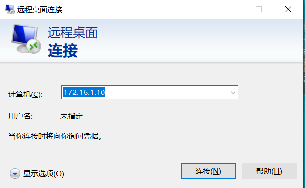
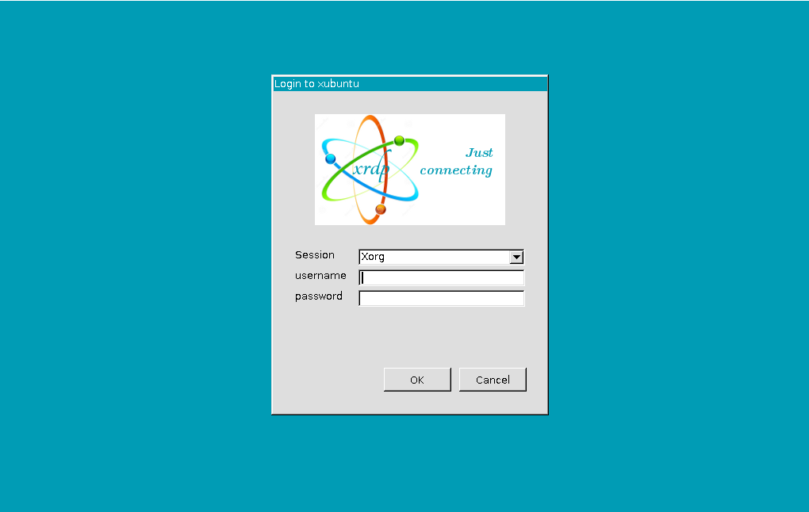
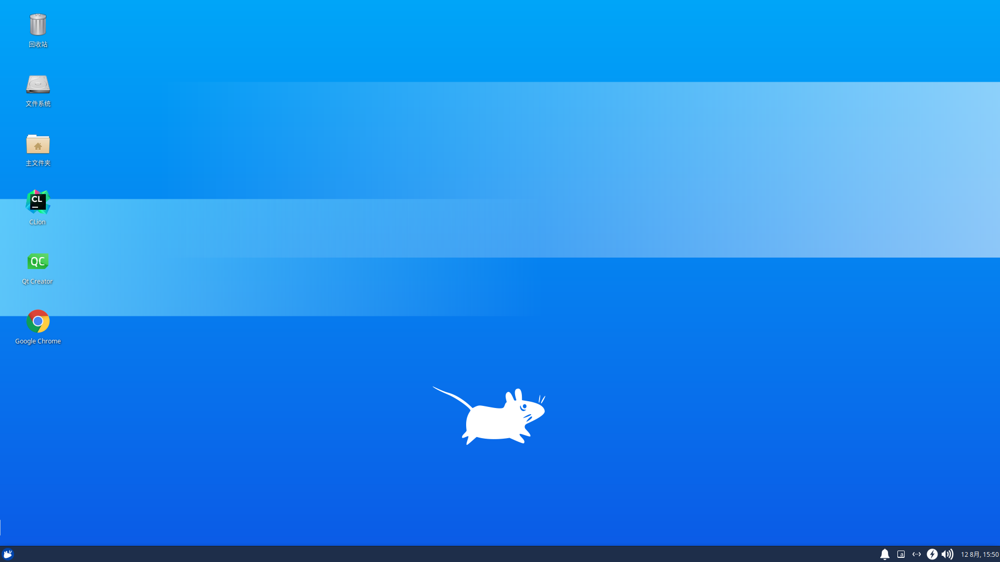
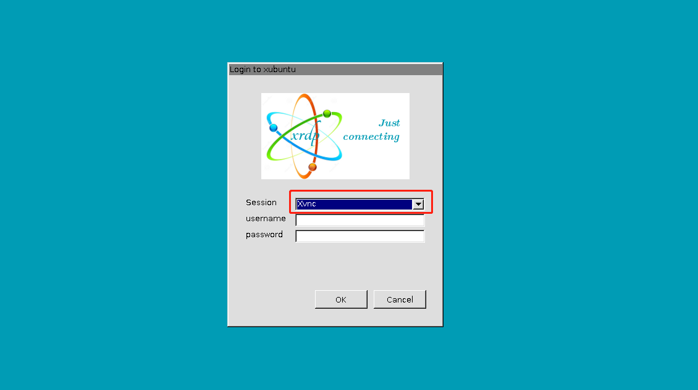
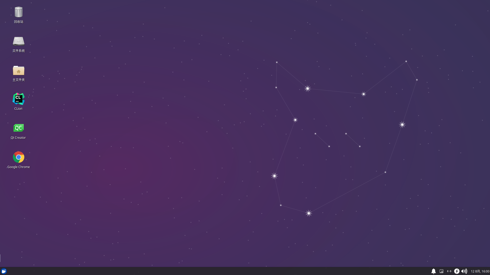

Windows 直接远程 Linux 桌面
[toc]
引言
Windows 的 mstsc 是使用 RDP(Remote Desktop Protocol) 远程桌面协议的，而大部分 Linux 提供的远程桌面基本都是 VNC(Virtual Network Console) 虚拟网络控制台的，所以想要 Windows 直接访问 Linux 远程桌面的话是需要一些配置的。
桌面登录和远程登录不能同时登录，比如本地以及登录桌面了，那远程登录就会有问题或者闪退，反之亦然。
安装 xrdp
本文假设已经有 Linux 桌面环境了
sudo apt install xrdp
注销登录，退出到登录界面
Windows 连接
使用 win+r 打开运行窗口，输入 mstsc 回车，打开远程桌面窗口

输入 Linux 主机的 ip 地址，点击连接，出现以下界面

登录 session 选择 xorg，输入 Linux 系统的用户名和密码点击 OK，可以看到成功进入桌面了，这时候看到的桌面背景可能和实际的不太一样

记得用完了要注销登录，而不是直接关闭远程窗口
XRDP 使用 VNC 支持多个远程
上面的session 使用 xorg 只能支持一处登录，其他地方再登录的话会把上一个挤下来，类似 Windows 远程 Windows 的现象，XRDP 配合 VNC 的话，可以支持多处登录，然后所有客户端实时共享屏幕。
安装 vncserver
sudo apt install vnc4server
如果提示无法安装，那就安装下面这个
sudo apt install tigervnc-standalone-server
Windows 连接登录
之前步骤和上面一样

登录 session 选择 xvnc，输入 Linux 系统的用户名和密码点击 OK，可以看到成功进入桌面了，这时候看到的桌面背景就和实际的一样了

然后这个还支持多个客户端同时登录，使用完毕也需要手动注销登录，不然窗口管理器那边登不上。
小结
装了 xrdp 之后使用 Windows 连接的话就不用额外装软件了
装桌面环境很多都是推荐 xfce4，确实比较轻，但是下面这句，我在有些系统没有设置也可以直接远程登录，有些系统却不行，先做个记录（分析了 Xsession 启动脚本后，得出下文结论）
echo xfce4-session >~/.xsession
Xsession 在启动的时候，如果有 ~/.xsession 文件，则启动；否则默认启动的是 /usr/bin/x-session-manager；在 Ubuntu 中，有以下链接关系，由于桌面环境仅安装了 xfce4，所以 gnome-session 启动失败；同理，如果是装的其他桌面环境，无法登录的情况下，也可以在 /usr/bin 目录下找相应的 session 名称，然后写入 ~/.xsession 文件
附录A 带 xfce4 桌面可远程的 Dockerfile
最好不使用 docker 容器，我这里是有点特殊情况，必须用容器
Dockerfile
将镜像小的操作放在前面，docker build 的时候会快一点
FROM ubuntu:20.04
COPY entrypoint /sbin/entrypoint
RUN chmod +x /sbin/entrypoint
ENTRYPOINT ["/sbin/entrypoint"]
RUN sed -i "s@http://.*.ubuntu.com@http://mirrors.tuna.tsinghua.edu.cn/@g" /etc/apt/sources.list \
&& export DEBIAN_FRONTEND=noninteractive && apt update && apt upgrade -y \
&& apt install xfce4 xfce4-terminal xrdp tigervnc-standalone-server \
ssh vim bash-completion sudo -y \
&& apt purge gnome* network-manager-gnome -y && apt autoremove -y && apt clean \
&& rm -rf /var/lib/apt/* /var/cache/apt/* /var/log/apt/* \
&& useradd -G sudo,root -m -s /bin/bash zzc
entrypoint
#!/bin/bash
if [ "$(basename "$0")" = "reboot" ];then
trap "" SIGHUP # 忽略信号，父进程会被杀
ps -ef | grep -v "$$" | awk 'NR <=2 { next } {print $2}' | xargs kill -9
fi
ln -sf /sbin/entrypoint /sbin/reboot
service ssh start
rm -rf /var/run/xrdp/*
service xrdp start
if [ $$ -eq 1 ];then
exec bash
fi
注：之前最后一句写的是 exec sleep infinity，但是这种情况下不会回收孤儿进程；所以改成了 exec bash，然后 docker run 的时候使用 -itd 的参数来时容器在后台一直运行
附录B 中文支持
安装基础库
# 安装中文字体
apt install fonts-wqy-zenhei
# 安装locales
apt install locales
正常系统做法
dpkg-reconfigure locales # 根据提示选择需要的即可
Docker系统
dcoker 系统启动方式和普通系统不一样，所以单独设置
# 生成中文环境
locale-gen zh_CN.UTF-8
# 在 /etc/profile 中设置语言
export LANG=C.UTF-8 # 因为这里只想能显示中文，界面保持英文
# 如果需要将界面也改成中文的话
export LANG=zh_CN.UTF-8
export LANGUAGE=zh_CN.UTF-8
由于个人水平有限，文中若有不合理或不正确的地方欢迎指出改正